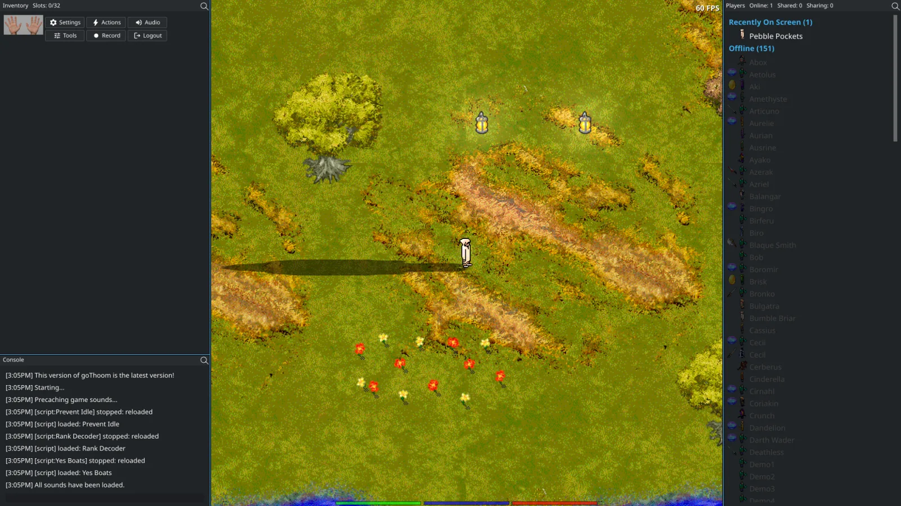

Fluid movement
Optional interpolation and animation blending make travel easier on the eyes at modern frame rates.
Open-source Clan Lord client
Return to Puddleby with fluid movement, refined pixels, flexible controls, and an open client you can inspect and shape yourself.
Familiar world, better window
Resize the world, arrange the tools you use, and keep the classic artwork feeling like itself.

What changes
Optional interpolation and animation blending make travel easier on the eyes at modern frame rates.
CRT-aware denoising and high-quality scaling reveal the color hidden inside the original dithering.
High-quality resampling, a modern music synthesizer, and independent mixer controls improve every channel.
Use classic mouse movement, WASD, and custom hotkeys, then tune network timing for your connection to reduce effective input latency.
Extend the client with readable Go scripts, direct function hotkeys, chat triggers, and a documented API.
Choose themes, reposition windows, tune rendering quality, and keep your layout between sessions.
Play Clan Lord .clmov recordings and jump directly to the moments you want to review.
Passage to the Lok’Groton islands
Choose a portable build for Windows, macOS, or Linux and rejoin the community of exiles in the Lands.

Built in the open
goThoom is MIT licensed and developed in public. Bug reports, fixes, scripts, and careful experiments are welcome.